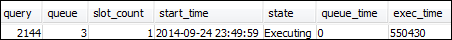
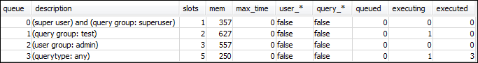
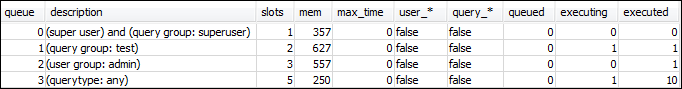

Die vorliegende Übersetzung wurde maschinell erstellt. Im Falle eines Konflikts oder eines Widerspruchs zwischen dieser übersetzten Fassung und der englischen Fassung (einschließlich infolge von Verzögerungen bei der Übersetzung) ist die englische Fassung maßgeblich.
Abschnitt 3: Weiterleiten von Abfragen zu Warteschlangen auf der Grundlage von Benutzergruppen und Abfragegruppen
Nun haben Sie Ihren Cluster einer neuen Parametergruppe zugeordnet und WLM konfiguriert. Führen Sie als Nächstes ein paar Abfragen aus, um zu sehen, wie Amazon Redshift Abfragen zur Bearbeitung in Warteschlangen weiterleitet.
Schritt 1: Anzeigen der Konfiguration der Abfragewarteschlange in der Datenbank
Prüfen Sie zuerst, ob die WLM-Konfiguration der Datenbank Ihren Erwartungen entspricht.
So zeigen Sie die Konfiguration der Abfragewarteschlange an
-
Öffnen Sie RSQL und führen Sie die folgende Abfrage aus. Die Abfrage verwendet die Ansicht WLM_QUEUE_STATE_VW, die Sie in erstellt haben Schritt 1: Erstellen der Ansicht WLM_QUEUE_STATE_VW. Wenn vor dem Neustart des Clusters bereits eine Sitzung mit der Datenbank verbunden war, müssen Sie die Verbindung erneut herstellen.
select * from wlm_queue_state_vw;Nachfolgend sehen Sie ein Beispielergebnis.

Vergleichen Sie die Ergebnisse mit denen in Schritt 1: Erstellen der Ansicht WLM_QUEUE_STATE_VW. Beachten Sie, dass jetzt zwei weitere Warteschlangen vorhanden sind. Warteschlange 1 ist jetzt die Warteschlange für die Testabfragegruppe, und Warteschlange 2 ist die Warteschlange für die Admin User-Gruppe.
Warteschlange 3 ist jetzt die Standardwarteschlange. Die letzte Warteschlange in der Liste ist immer die Standardwarteschlange. Dies ist die Warteschlange, zu der Abfragen standardmäßig weitergeleitet werden, wenn in einer Abfrage keine Benutzergruppe oder Abfragegruppe angegeben ist.
-
Führen Sie die folgende Abfrage aus, um zu bestätigen, dass Ihre Abfrage jetzt in Warteschlange 3 ausgeführt wird.
select * from wlm_query_state_vw;Nachfolgend sehen Sie ein Beispielergebnis.

Schritt 2: Ausführen einer Abfrage mit der Abfragegruppenwarteschlange
So führen Sie eine Abfrage mit der Abfragegruppenwarteschlange aus
-
Führen Sie die folgende Abfrage aus, um sie zur Abfragegruppe
testweiterzuleiten.set query_group to test; select avg(l.priceperticket*s.qtysold) from listing l, sales s where l.listid <40000; -
Führen Sie vom anderen RSQL-Fenster aus die folgende Abfrage aus.
select * from wlm_query_state_vw;Nachfolgend sehen Sie ein Beispielergebnis.

Die Abfrage wurde zur Testabfragegruppe geleitet; dies ist jetzt Warteschlange 1.
-
Wählen Sie in der Ansicht des Warteschlangenzustands alle aus.
select * from wlm_queue_state_vw;Das Ergebnis sieht in etwa wie folgt aus.
 -
Setzen Sie jetzt die Abfragegruppe zurück, und führen Sie die lange Abfrage erneut aus:
reset query_group; select avg(l.priceperticket*s.qtysold) from listing l, sales s where l.listid <40000; -
Führen Sie die Abfragen gegen die Ansichten aus, um die Ergebnisse zu sehen.
select * from wlm_queue_state_vw; select * from wlm_query_state_vw;Nachfolgend sehen Sie einige Beispielergebnisse.


Das Ergebnis sollte sein, dass die Abfrage jetzt wieder in Warteschlange 3 ausgeführt wird.
Schritt 3: Erstellen eines Datenbankbenutzers und einer Benutzergruppe
Bevor Sie in dieser Warteschlange Abfragen ausführen können, müssen Sie die Benutzergruppe in der Datenbank erstellen und ihr einen Benutzer hinzufügen. Melden Sie sich dann bei RSQL mit den Anmeldeinformationen des neuen Benutzers an und führen Sie Abfragen aus. Um Datenbankbenutzer zu erstellen, müssen Sie Abfragen als Superuser (etwa als „admin user“) ausführen.
So erstellen Sie einen neuen Datenbankbenutzer und eine Benutzergruppe
-
Erstellen Sie in der Datenbank einen neuen Datenbankbenutzer mit der Bezeichnung
adminwlm, indem Sie in einem RSQL-Fenster den folgenden Befehl ausführen.create user adminwlm createuser password '123Admin'; -
Führen Sie dann die folgenden Befehl aus, um die neue Benutzergruppe zu erstellen und den neuen Benutzer
adminwlmhinzuzufügen.create group admin; alter group admin add user adminwlm;
Schritt 4: Ausführen einer Abfrage mit der Benutzergruppenwarteschlange
Führen Sie als Nächstes eine Abfrage aus und leiten Sie sie zur Benutzergruppenwarteschlange weiter. Sie tun dies, wenn Sie Ihre Abfrage zu einer Warteschlange weiterleiten möchten, die für die Bearbeitung der Art der auszuführenden Abfrage konfiguriert ist.
So führen Sie eine Abfrage mit der Benutzergruppenwarteschlange aus
-
Führen Sie in RSQL-Fenster 2 die folgenden Abfragen aus, um zum Konto
adminwlmzu wechseln und eine Abfrage als dieser Benutzer auszuführen.set session authorization 'adminwlm'; select avg(l.priceperticket*s.qtysold) from listing l, sales s where l.listid <40000; -
Führen Sie in RSQL-Fenster 1 die folgende Abfrage aus, um die Abfragewarteschlange zu sehen, zu der die Abfragen geleitet werden.
select * from wlm_query_state_vw; select * from wlm_queue_state_vw;Nachfolgend sehen Sie einige Beispielergebnisse.


Die Warteschlange, in der diese Abfrage ausgeführt wurde, ist Warteschlange 2, die Warteschlange für
admin-Benutzer. Immer wenn Sie als dieser Benutzer Abfragen ausführen, werden diese in Warteschlange 2 ausgeführt, sofern Sie nicht eine andere Abfragegruppe zur Verwendung angeben. Die ausgewählte Warteschlange ist abhängig von den Zuweisungsregeln für Warteschlangen. Weitere Informationen finden Sie unter WLM-Warteschlangenzuweisungsregeln. -
Führen Sie jetzt von RSQL-Fenster 2 aus die folgende Abfrage aus.
set query_group to test; select avg(l.priceperticket*s.qtysold) from listing l, sales s where l.listid <40000; -
Führen Sie in RSQL-Fenster 1 die folgende Abfrage aus, um die Abfragewarteschlange zu sehen, zu der die Abfragen geleitet werden.
select * from wlm_queue_state_vw; select * from wlm_query_state_vw;Nachfolgend sehen Sie einige Beispielergebnisse.

-
Setzen Sie anschließend die Abfragegruppe zurück.
reset query_group;